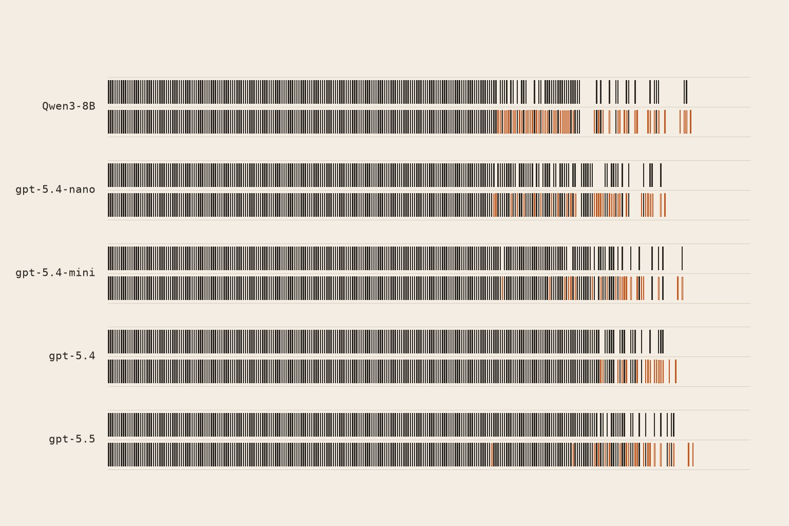
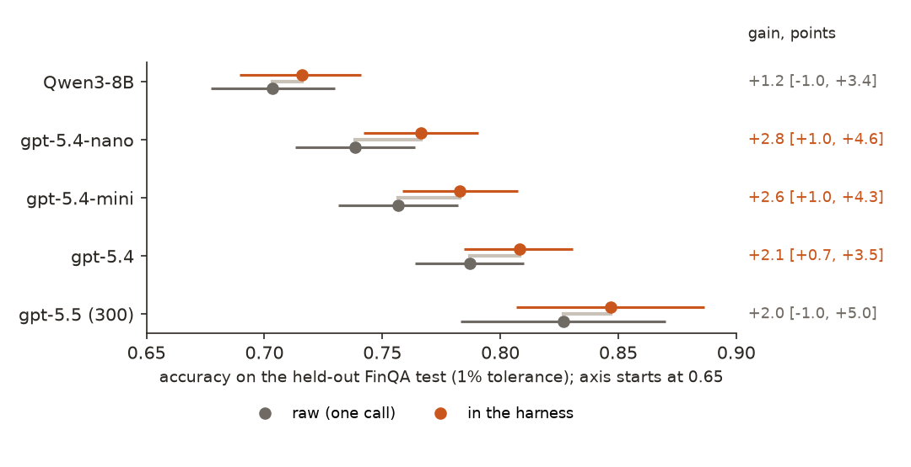
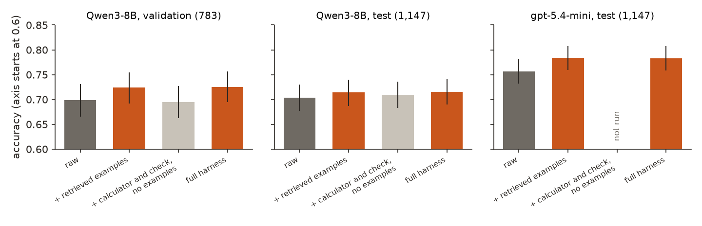

← Research·Experiments·
On FinQA, retrieved worked examples add 2 to 3 points to every API model; a calculator loop adds nothing
Agent builders wrap a model in a harness (tools, examples, a check) and report that it beats bigger models. This note builds one for financial number questions, takes it apart on a held-out test, and prices every part: what helps, what does not, and whether a cheap model in the harness catches a frontier one.

Summary: the short answer and the key results
In short
Does a harness make a cheap model as good as a frontier model at financial number questions?
No, but it helps every model by about the same amount. On the 1,147 held-out FinQA test questions, a harness of retrieved worked examples, a Python calculator and a check turn adds 2.8 points to gpt-5.4-nano, 2.6 to gpt-5.4-mini and 2.1 to gpt-5.4 (each interval above zero), 2.0 to gpt-5.5 on 300 questions and 1.2 to the open Qwen3-8B (intervals include zero). Taking it apart shows where the gain comes from: the four worked examples, retrieved from the training questions, give gpt-5.4-mini the whole gain on their own (+2.7 points), while the calculator and check without examples give Qwen3-8B nothing (+0.6, interval from −1.5 to +2.7). The harness costs about four and a half times as much per question as one call. The cheapest good result is the examples alone: gpt-5.4-mini with them scores 0.784, level with raw gpt-5.4 (0.787) at a third of the price, but no cheap model in the harness beats gpt-5.4 or gpt-5.5 given the same harness.
Key results
| What we tested | Result | Compared with |
|---|---|---|
| Does the harness beat the same model with one call? (1,147 held-out test questions) | Yes, by 2 to 3 points for every API model: gpt-5.4-nano +2.8 [+1.0, +4.6], gpt-5.4-mini +2.6 [+1.0, +4.3], gpt-5.4 +2.1 [+0.7, +3.5]; gpt-5.5 +2.0 [−1.0, +5.0] on 300 | Qwen3-8B: +1.2 [−1.0, +3.4], not shown |
| Which part does it? (ablation on the test set) | The retrieved worked examples. gpt-5.4-mini with only the examples: +2.7 [+1.0, +4.4], the same as the full harness | Qwen3-8B with the calculator and check but no examples: +0.6 [−1.5, +2.7]; on validation −0.4 [−3.1, +2.3] |
| Is the gain just learning FinQA’s sign convention (a “decline” written as a negative number)? | Mostly not: recounting without the questions where only the sign changed, the harness still adds 1.9 to 3.1 points for the API models | Sign-only changes are 6 to 17 of the 48 to 74 questions each harness fixed |
| Does a cheap model in the harness beat a frontier model? | No. gpt-5.4-mini in the harness 0.783 and with examples only 0.784, against raw gpt-5.4 0.787 (−0.4 [−2.0, +1.1] and −0.3 [−1.9, +1.1]); Qwen3-8B in the harness 0.716 (−7.1 [−9.3, −5.0]) | gpt-5.4 in the harness 0.808; raw gpt-5.5 0.793 |
| What does each answer cost? | The harness costs 3.7 to 5.0 times one call (gpt-5.4-mini $0.0011 → $0.0049); examples alone cost 1.15 times ($0.0012) | Raw gpt-5.4 $0.0036, raw gpt-5.5 $0.0122 per question |
| How much did tuning on 100 questions overstate the gain? | Qwen3-8B in the harness: +12 points on the 100 development questions, +2.7 on 783 fresh validation questions, +1.2 on the test | The first harness version cost gpt-5.4-nano 7 points on the same 100 |
01Introduction
A company’s allowance for doubtful accounts fell from 38.9 to 34.3. “What was the percentage decline?” gpt-5.4-mini computes 11.8%. FinQA’s answer key says −11.8%. Show the model four solved questions from the training set first, one of them “the percentage decline in the allowance for doubtful accounts in 2013: subtract(38.3, 45.3), divide(#0, 45.3) = −0.15453”, and it writes −11.8% too. That is a harness at its smallest: not a smarter model, just a model told how this exam is marked. This note asks how much of what harnesses are credited with is that, and how much is the tools.
What is known. FinQA (Chen et al., 2021) asks numeric questions about excerpts of company annual reports: a page of text and a table, then “what was the percentage change in net revenue?” Its answers are short arithmetic programs, which made it a standard test for tool use: Program of Thoughts had a model write Python instead of doing the arithmetic in its head, and later systems retrieve solved examples that look like the question (FINDER, FinQAPT). With GPT-4 these reached 75% to 81% on the test set. Products built around a frontier model with a harness now report beating bigger models outright.
What is missing. Those systems change several things at once and report one number. They seldom say which part made the gain, what each answer costs, or whether a current frontier model in the same harness simply moves up too.
What does each part of a harness add on held-out FinQA questions, for a small open model and for four API models, and at what cost per question?
What this note does. Its contributions:
- A harness with three switchable parts (retrieved worked examples, a Python calculator over a parsed table, and a check turn), run the same way for five models.
- A measurement on the 1,147-question held-out test: each model raw and in the harness, paired question by question, with dollars and seconds per question.
- An ablation that separates the examples from the tools, and a check of the boring explanation (that the gain is only FinQA’s sign convention).
- A record of how much the harness’s own development overstated it, including the version that made things worse.
What would count as an answer. Set before the test runs:
- Every design choice is made on the validation set; the test set is run once per final system.
- A part “helps” only if the paired difference against the same model without it has an interval above zero.
- The grader is checked first on the answer key: it must mark 100% of the gold answers right.
- A cheaper system “beats” a frontier one only if the paired difference on the same questions is above zero; a tie at a lower price is reported as a tie.
02Setup
2.1 Harness 101, for software engineers
- A harness is the code around a model call: what goes into the prompt, which tools the model can use, how many turns it gets, and how the final answer is read. The model’s weights do not change. Think of it as the test fixture and helper library a new team member gets on day one.
- Retrieved worked examples are few-shot prompting chosen per question. Here: the four training questions whose wording is most similar to this one (TF-IDF, a word-overlap score), each with FinQA’s gold program, like
subtract(5829, 5735), and its exact result. Only the training split is searched, so no test answer can leak in. - The calculator is Python. The model writes a code block with the numbers it read as named constants (
revenue_2015 = 5829 # table, 2015); the harness runs it in a fresh process and returns the printed output as the next turn. - The cell list is a parsed table. Next to the table as printed, the harness lists every cell as
row | column = value, with “$ 1,234” turned into 1234 and “( 12 )” into −12, so a model never has to line up columns by eye. - The check turn asks once more: right rows, right years, right order, right sign, right unit? Fix it or repeat it.
- Raw means one call with the question and the instruction to reason briefly and end with
ANSWER: <value>; the same answer rule ends every harness run.
2.2 The grader, by hand
FinQA’s answer key is the output of each question’s program, so a percentage is usually stored as a fraction: 0.14464 for 14.46%. A prediction counts as right if it, or it divided or multiplied by 100, is within 1% of the gold (relative). Three answers to a question whose gold is 0.14464:
| Answer | Candidates | Closest to 0.14464 | Off by | Right? |
|---|---|---|---|---|
14.46% | 14.46, 0.1446, 1446 | 0.1446 | 0.03% | yes |
0.1446 | 0.1446, 0.001446, 14.46 | 0.1446 | 0.03% | yes |
14% | 14, 0.14, 1400 | 0.14 | 3.2% | no: rounded too far |
The sign is kept, so −14.46% is wrong here. The grader marks 100% of the gold answers right on all four splits (as written, and as a percent); test_grader.py checks this. FinQA’s own human-written answer strings disagree with its program output on 6% of the test (70 of 1,133 give a different value), so no system can reach 100%; FinQA’s paper puts expert humans at 91%. A “lenient” score that also accepts those strings is in the result files; it moves every system up by 2 to 4 points and reverses no comparison.
2.3 Splits: what each set was used for
| Set | What it is | Size | Used for |
|---|---|---|---|
| FinQA train | Questions with gold programs | 6,251 | The pool the worked examples are retrieved from; nothing else |
| dev:100 | A fixed random 100 of FinQA’s validation split (seed 0) | 100 | Developing the harness (three versions). Its numbers are optimistic and are reported only as such |
| Validation (devrest) | The other 783 validation questions | 783 | Every choice after the harness was frozen; API models on a fixed 300 of them |
| Test | FinQA’s test split, gold public | 1,147 | Run once per final system; gpt-5.5’s harness run on a fixed random 300 |
| TAT-QA guard | A random 300 of TAT-QA’s 699 test arithmetic questions (Zhu et al., 2021) | 300 | Does the FinQA harness travel to another set? |
2.4 Five models
Qwen3-8B, an open 8-billion-parameter model (Apache-2.0), sampled on Tinker in its non-thinking mode (thinking mode scored lower on the development set, 0.63 against 0.67, at four times the cost), greedy. Four OpenAI models at their default reasoning settings: gpt-5.4-nano and gpt-5.4-mini (the cheap API models), gpt-5.4 and gpt-5.5 (frontier). gpt-5.5 reasons by default and was given up to 4,096 output tokens per call. Prices are list prices per million tokens; cached input on OpenAI is billed at a tenth.
03How the study was run
- Benchmark choice. FinQA (MIT, public test gold), TAT-QA (CC BY 4.0) and ConvFinQA (test gold hidden, so dropped) were checked; FinQA became the test, TAT-QA the guard.
- Grader written and checked on every gold answer (24 tests).
- Harness version 1 on dev:100, four systems: Python that looked table cells up by name, and a line of “conventions” in the prompt. It cost gpt-5.4-nano 7 points (0.76 to 0.69). Transcripts showed two causes: the lookup fetched wrong cells from FinQA’s messy headers (“december 312017”), and the line “percent change = (new − old) / old” turned absolute changes into percentages.
- Version 2 added the retrieved examples and dropped the conventions line (dev:100, six systems). Version 3, frozen: the calculator takes literals, the table is also given as a cell list (dev:100, three systems).
- Validation: Qwen3-8B on 783 questions in every mode; gpt-5.4-nano and gpt-5.4-mini on 300, raw and in the harness. Self-consistency (five runs, majority vote) was tried too and dropped (section 4.5).
- Test, once per system: five models raw and in the harness (gpt-5.5’s harness on 300), plus the examples-only and no-examples ablations: 13 test runs, 14,064 graded answers.
- Guard: Qwen3-8B raw and in the harness, gpt-5.4-mini raw, on 300 TAT-QA questions.
| Fixed before any test run | Changed after reading results |
|---|---|
| The grader and its tolerance; the splits and which set decides what; the harness (version 3), its prompts and turn limits; the five models and their settings; paired bootstrap intervals | The harness went through three versions on dev:100, after reading transcripts (listed above). gpt-5.5 was added as a second frontier model after the first test runs; its harness run covers 300 test questions for cost. The ablation “calculator and check without examples” was run on the test for Qwen3-8B only: the API key ran out of credit before gpt-5.4-mini’s run, and the validation result already showed the loop adding nothing. No size of gain was set in advance as a bar. |
Conditions: greedy decoding for Qwen3-8B; one call per turn, at most 4 calculator runs and one check per question; Python in a fresh python -I process, 10 s limit, at most four at a time on a laptop. Spend for this note: $82.61 at list prices (OpenAI $49.06, OpenRouter $20.98 while the OpenAI key had no credit, Tinker $12.57), development runs included.
04Results
Six findings:
- 4.1 The harness adds 2 to 3 points to every API model, about 1 to Qwen3-8B.
- 4.2 The retrieved examples carry the gain; the calculator loop adds nothing.
- 4.3 The gain is not just FinQA’s sign convention.
- 4.4 A cheap model in the harness ties a frontier model at best, and the examples alone are the cheap way there.
- 4.5 Tuning on 100 questions overstated the gain tenfold.
- 4.6 On another benchmark, FinQA’s examples do not help.
4.1 The harness adds 2 to 3 points to every API model, about 1 to Qwen3-8B
On the 1,147 held-out test questions, the harness raises gpt-5.4-nano from 0.738 to 0.766 (+2.8 points [+1.0, +4.6]), gpt-5.4-mini from 0.757 to 0.783 (+2.6 [+1.0, +4.3]) and gpt-5.4 from 0.787 to 0.808 (+2.1 [+0.7, +3.5]). gpt-5.5 rises from 0.827 to 0.847 on 300 questions (+2.0 [−1.0, +5.0]) and Qwen3-8B from 0.704 to 0.716 (+1.2 [−1.0, +3.4]). The gain is about the same size from the cheapest model to the strongest, so the harness does not close the gap between them (Figure 1).

results/runs/.A gain of 2.6 points is the net of many changes in both directions. gpt-5.4-mini’s harness fixed 59 questions the raw model got wrong and broke 29 it got right; Qwen3-8B’s fixed 90 and broke 76. The cover shows where they fall: mostly among the hardest third of the questions, where every model is unsure.
4.2 The retrieved examples carry the gain; the calculator loop adds nothing
With only the four retrieved worked examples added to its prompt, gpt-5.4-mini scores 0.784 on the test, +2.7 points [+1.0, +4.4] over raw, the same as the full harness (0.783). Qwen3-8B with the calculator, the cell list and the check but no examples scores +0.6 [−1.5, +2.7] on the test and −0.4 [−3.1, +2.3] on validation. On validation the examples alone give Qwen3-8B +2.6 [+0.3, +4.9] and the full harness +2.7; on the test the three versions sit within a point of each other and none is shown (Figure 2).

Why the calculator adds nothing: in the transcripts read during development, the errors were in reading, not computing: the wrong row, the wrong pair of years, a change taken in the wrong direction, a value in thousands treated as millions. Python repeats those errors exactly. What fixes them is a solved question that was read the right way, which is what the examples are. The explorer shows six cases from the test, two of them broken by the harness.
Question (RSG/2018/page_94.pdf-1): as of december 31 , 2018 what was the percentage decline in the allowance for doubtful accounts Gold: -0.11825 (FinQA’s answer string: 11.9%)
fixed: the examples show FinQA writes a decline as a negative percentage.
Raw, one call: 11.8% wrong
Beginning allowance for doubtful accounts in 2018 was 38.9 and ending balance was 34.3. Decline = 38.9 - 34.3 = 4.6. Percentage decline = 4.6 / 38.9 × 100 ≈ 11.8%. ANSWER: 11.8%
The 4 retrieved train examples
Q: what was the percentage decline in the allowance for doubtful accounts in 2013 Program: subtract(38.3, 45.3), divide(#0, 45.3) Result: -0.15453 Q: in 2012 what was the allowance for doubtful accounts Program: divide(19.0, 516.9) Result: 0.03676 Q: what was the percentage change in the allowance for doubtful accounts in 2016 Program: subtract(44.0, 46.7), divide(#0, 46.7) Result: -0.05782 Q: what was the percentage change in the allowance for doubtful accounts from 2006 to 2007? Program: subtract(47, 52), divide(#0, 52) Result: -0.09615
With them: -11.8% right
In the harness: -11.8% right
[model] PLAN: - Need the allowance for doubtful accounts balance at end of year 2017 = 38.9 (from table: “balance at end of year | 2017 = 38.9”) - Need the allowance for doubtful accounts balance at end of year 2018 = 34.3 (from table: “balance at end of year | 2018 = 34.3”) - Formula for percentage decline from 2017 to 2018: (2018 - 2017) / 2017 ```python start = 38.9 # balance at end of year | 2017 end = 34.3 # balance at end of year | 2018 result = (end - start) / start print(result) ``` ANSWER: -0.118 [harness] Python output: -0.1182519280205656 If this changes your answer, fix it. End with `ANSWER: <value>`. [model] ANSWER: -11.8% [harness] CHECK before you finish: re-read the question. Did you use the right rows, the right years and the right order (new vs old)? Is the sign right? Is the unit right (a percentage written with %, a ratio as a plain number)? If anything is wrong, fix it (you may run Python again). End with `ANSWER: <value>`. [model] ANSWER: -11.8%
Question (MRO/2007/page_136.pdf-2): as of december 31 , 2007 , how much unrecognized compensation cost related to restricted stock awards is expected to be recognized in 1 year , in millions? Gold: 26.42857 (FinQA’s answer string: 26.4)
fixed: an example spreads a cost evenly over the stated years.
Raw, one call: 37 wrong
The excerpt says that as of December 31, 2007, there was **$37 million** of unrecognized compensation cost related to restricted stock awards, expected to be recognized over a **weighted average period of 1.4 years**. That implies about one year’s worth is still within that stated period, but the question asks for the amount expected to be recognized in 1 year, which is taken directly from the stated total unrecognized compensation cost context as **37 million**. ANSWER: 37
The 4 retrieved train examples
Q: as of 2008 what was annual cost is expected to be recognized of the total unrecognized compensation cost related to unvested stock awards net of the forfeiture provision in billions\\n Program: divide(3.3, 2.6) Result: 1.26923 Q: at december 2009 what was the annual anticipated unrecognized compensation cost related to unvested stock awards to be recognized in billions Program: divide(1.6, 1.3) Result: 1.23077 Q: on december 31 , 2017 what is the estimated unrecognized compensation cost related to the non vested rsus , with and without performance conditions , is expected to be recognized as of december 31 , 2018 in millions Program: divide(const_6, 1.5) Result: 4 Q: as of december 26 , 2015 , what was the expected unrecognized compensation costs to be recognized per year in billions Program: divide(1.8, 1.2) Result: 1.5
With them: 26.4286 right
In the harness: 26.42857142857143 right
[model] PLAN: Need 2 numbers from the excerpt: 1) unrecognized compensation cost related to restricted stock awards = 37 million (sentence: “as of december 31 , 2007 , there was $ 37 million of unrecognized compensation cost related to restricted stock awards”) 2) weighted average period = 1.4 year (same sentence: “expected to be recognized over a weighted average period of 1.4 year”) Formula: 37 / 1.4 ```python cost = 37 # sentence: as of december 31, 2007, there was $37 million of unrecognized compensation cost related to restricted stock awards years = 1.4 # sentence: expected to be recognized over a weighted average period of 1.4 year result = cost / years print(result) ``` ANSWER: 26.428571428571427 [harness] Python output: 26.42857142857143 If this changes your answer, fix it. End with `ANSWER: <value>`. [model] ANSWER: 26.42857142857143 [harness] CHECK before you finish: re-read the question. Did you use the right rows, the right years and the right order (new vs old)? Is the sign right? Is the unit right (a percentage written with %, a ratio as a plain number)? If anything is wrong, fix it (you may run Python again). End with `ANSWER: <value>`. [model] ANSWER: 26.42857142857143
Question (GPN/2014/page_92.pdf-1): what is the total value of securities issued and approved by security holders , ( in millions ) ? Gold: 31.32382 (FinQA’s answer string: 31.3)
fixed: the examples value securities as shares times price.
Raw, one call: 0.766801 wrong
The table shows “equity compensation plans approved by security holders” with 766801 securities to be issued upon exercise. Interpreting the question as asking for that total value in millions, convert 766801 to millions: 0.766801. ANSWER: 0.766801
The 4 retrieved train examples
Q: what is the total value of securities approved by security holders , ( in millions ) ? Program: multiply(1765510, 34.92), divide(#0, const_1000000) Result: 61.6516 Q: what is the total value of the issued securities approved by security holders , ( in millions ) ? Program: multiply(5802673, 85.82), divide(#0, const_1000000) Result: 497.985 Q: what is the total value of issued securities that are approved by security holders , in billions? Program: multiply(3946111, 34.67), divide(#0, const_1000000000) Result: 0.13681 Q: what is the total value of securities approved by security holders that remain to be issued in the future , ( in millions ) ? Program: multiply(6570132, 28), divide(#0, const_1000000) Result: 183.964
With them: 31.3219 right
In the harness: 31.32382085 right
[model] PLAN: I need the number of securities approved by security holders from the table (`equity compensation plans approved by security holders | number of securities to be issued upon exercise of outstanding options warrants and rights (a) = 766801`) and the weighted-average exercise price from the same row (`40.85`). Formula: `766801 * 40.85 / 1000000`. ```python shares = 766801 # equity compensation plans approved by security holders | number of securities to be issued upon exercise of outstanding options warrants and rights (a) price = 40.85 # equity compensation plans approved by security holders | weighted-average exerciseprice of outstanding options warrants and rights (b) result = shares * price / 1000000 print(result) ``` ANSWER: 31.34302085 [harness] Python output: 31.32382085 If this changes your answer, fix it. End with `ANSWER: <value>`. [model] ANSWER: 31.32382085 [harness] CHECK before you finish: re-read the question. Did you use the right rows, the right years and the right order (new vs old)? Is the sign right? Is the unit right (a percentage written with %, a ratio as a plain number)? If anything is wrong, fix it (you may run Python again). End with `ANSWER: <value>`. [model] ANSWER: 31.32382085
Question (KHC/2018/page_132.pdf-3): what is the net increase in outstanding shares during the period of 2016 to 2018 , in millions? Gold: 6.0 (FinQA’s answer string: 6)
fixed: the examples count the change over the whole period.
Raw, one call: 3 wrong
Outstanding shares were 1217 million at the end of 2016 and 1220 million at the end of 2018. Net increase = 1220 - 1217 = 3 million. ANSWER: 3
The 4 retrieved train examples
Q: what is the net increase in the balance of outstanding shares during 2013? Program: subtract(861, 388) Result: 473 Q: what is the net increase in the balance of outstanding shares during 2012? Program: subtract(388, 405) Result: -17 Q: what was the net increase in aro during the period , in millions? Program: subtract(25, 3) Result: 22 Q: now much of the net increase in aro during the period was due to accretion , in millions? Program: add(0, 0), add(#0, #0), subtract(25, 3), divide(#1, #2) Result: 0
With them: 6 right
In the harness: 6 right
[model] PLAN: Need shares outstanding at balance at december 29 2018 = 1220 (table cell) and at balance at january 3 2016 = 1214 (table cell). Formula: 1220 - 1214. ```python start = 1214 # balance at january 3 2016 | shares outstanding end = 1220 # balance at december 29 2018 | shares outstanding result = end - start print(result) ``` ANSWER: 6 [harness] Python output: 6 If this changes your answer, fix it. End with `ANSWER: <value>`. [model] ANSWER: 6 [harness] CHECK before you finish: re-read the question. Did you use the right rows, the right years and the right order (new vs old)? Is the sign right? Is the unit right (a percentage written with %, a ratio as a plain number)? If anything is wrong, fix it (you may run Python again). End with `ANSWER: <value>`. [model] ANSWER: 6
Question (BLL/2010/page_37.pdf-2): what was the percentage decrease in cash flows from operations from 2009 to 2010? Gold: 0.07951 (FinQA’s answer string: 8.0%)
broken: here FinQA's gold for a decrease is positive.
Raw, one call: 7.95% right
Cash flows from operations were 559.7 in 2009 and 515.2 in 2010. Decrease = 559.7 - 515.2 = 44.5. Percentage decrease = 44.5 / 559.7 × 100 = 7.95%. ANSWER: 7.95%
The 4 retrieved train examples
Q: what was the percentage change in cash from operating activities from 2009 to 2010? Program: subtract(1310, 1345), divide(#0, 1345) Result: -0.02602 Q: what was the percentage change in the consolidated net cash flows used for investing activities \\n from 2009 to 2010 Program: subtract(4.2, 3.2), divide(#0, 3.2) Result: 0.3125 Q: what is the percentage change in goodwill from 2009 to 2010? Program: subtract(8.6, 6.1), divide(#0, 6.1) Result: 0.40984 Q: what was the percentage change in cash from operations between 2009 and 2010? Program: subtract(1151, 868), divide(#0, 868) Result: 0.32604
With them: -7.95% wrong
In the harness: -7.950687868500982% wrong
[model] PLAN: Need 2010 cash flows from operating activities = 515.2 from the table, and 2009 cash flows from operating activities = 559.7 from the table. Formula: (2010 - 2009) / 2009, expressed as a percentage decrease (this will be negative because 2010 is lower). ```python operating_2010 = 515.2 # cash flows provided by ( used in ) operating activities including discontinued operations | 2010 operating_2009 = 559.7 # cash flows provided by ( used in ) operating activities including discontinued operations | 2009 result = (operating_2010 - operating_2009) / operating_2009 * 100 print(result) ``` ANSWER: -7.940680719313556% [harness] Python output: -7.950687868500982 If this changes your answer, fix it. End with `ANSWER: <value>`. [model] ANSWER: -7.950687868500982% [harness] CHECK before you finish: re-read the question. Did you use the right rows, the right years and the right order (new vs old)? Is the sign right? Is the unit right (a percentage written with %, a ratio as a plain number)? If anything is wrong, fix it (you may run Python again). End with `ANSWER: <value>`. [model] ANSWER: -7.950687868500982%
Question (GS/2017/page_179.pdf-4): what is the total amount of stock options cancelled in millions during 2017 , 2016 and 2015? Gold: 12.1 (FinQA’s answer string: 12.1)
broken: with the examples, the model added dollar values instead of option counts.
Raw, one call: 12.1 right
The excerpt says stock options cancelled were 4.6 million in 2017, 5.5 million in 2016, and 2.0 million in 2015. Add them: 4.6 + 5.5 + 2.0 = 12.1 million. ANSWER: 12.1
The 4 retrieved train examples
Q: what is the total value of stock options for leo p . denault , in millions? Program: multiply(50000, 108.20), divide(#0, const_1000000) Result: 5.41 Q: what is the total value of stock options for j . wayne leonard , in millions? Program: multiply(175000, 108.20), divide(#0, const_1000000) Result: 18.935 Q: in millions for 2017 , 2016 , and 2015 , what was the minimum amount of equity securities? Program: table_min(equity securities, none) Result: 2573 Q: what is the total rent expense for the period from december 31 , 2017 , 2016 and 2015 in millions Program: add(9.4, 8.1), add(#0, 5.4) Result: 22.9
With them: 2606 wrong
In the harness: 2606 wrong
[model] PLAN: We need the stock options cancelled amounts for 2017, 2016, and 2015 from the sentence “under these plans, the firm also cancelled 4.6 million, 5.5 million and 2.0 million of stock options with a total value of $1.09 billion, $1.11 billion and $406 million during 2017, 2016 and 2015, respectively.” Formula: 1090 + 1110 + 406, then convert millions already given, so sum = 2606 million. ```python a = 1090 # 2017 stock options cancelled total value, from sentence ($1.09 billion) b = 1110 # 2016 stock options cancelled total value, from sentence ($1.11 billion) c = 406 # 2015 stock options cancelled total value, from sentence ($406 million) result = a + b + c print(result) ``` ANSWER: 2606 [harness] Python output: 2606 If this changes your answer, fix it. End with `ANSWER: <value>`. [model] ANSWER: 2606 [harness] CHECK before you finish: re-read the question. Did you use the right rows, the right years and the right order (new vs old)? Is the sign right? Is the unit right (a percentage written with %, a ratio as a plain number)? If anything is wrong, fix it (you may run Python again). End with `ANSWER: <value>`. [model] ANSWER: 2606
Explorer. Six held-out FinQA test questions answered by gpt-5.4-mini three ways: raw (the end of its reply), with the four retrieved training examples, and in the full harness (every turn: plan and code from the model, Python output and the check from the harness; long turns cut). Picked by hand from the 46 questions both fixed and the 29 the harness broke; built by make_explorer.py from explorer.json.
4.3 The gain is not just FinQA’s sign convention
The opening example raises the boring explanation: maybe the examples only teach FinQA’s habit of writing a decline as a negative number, which is marking style, not skill. FinQA is not even consistent about it (the fifth explorer case has a “percentage decrease” whose gold is positive). To test it, every question a system changed was marked “sign-only” when its wrong answer was the gold with the sign flipped, and the gain was counted again without those.
| Model, system (test, 1,147) | Fixed (sign-only) | Broke (sign-only) | Net gain, points | Without sign-only changes |
|---|---|---|---|---|
| gpt-5.4-nano, harness | 74 (6) | 42 (9) | +2.8 | +3.1 |
| gpt-5.4-mini, examples only | 62 (16) | 31 (5) | +2.7 | +1.7 |
| gpt-5.4-mini, harness | 59 (17) | 29 (9) | +2.6 | +1.9 |
| gpt-5.4, harness | 48 (7) | 24 (8) | +2.1 | +2.2 |
| Qwen3-8B, examples only | 81 (16) | 69 (9) | +1.0 | +0.4 |
| Qwen3-8B, harness | 90 (9) | 76 (15) | +1.2 | +1.7 |
Sign-only changes are a minority of what the harness changed, and they cut both ways. Without them, the API models still gain 1.7 to 3.1 points. For gpt-5.4-mini, about a third of the examples’ gain is the sign convention; for gpt-5.4 and gpt-5.4-nano, none of it is. Counts come from sign_check in summary.json.
4.4 A cheap model in the harness ties a frontier model at best, and the examples alone are the cheap way there
On the same 1,147 questions, raw gpt-5.4 scores 0.787 for $0.0036 a question. gpt-5.4-mini in the harness scores 0.783 for $0.0049 (−0.4 points [−2.0, +1.1]); gpt-5.4-mini with only the examples scores 0.784 for $0.0012 (−0.3 [−1.9, +1.1]); gpt-5.4-nano in the harness scores 0.766 for $0.0017 (−2.1 [−3.8, −0.3]); Qwen3-8B in the harness 0.716 for $0.0015 (−7.1 [−9.3, −5.0]). The harness multiplies the price of each answer by 3.7 to 5.0 (several turns, each resending the report) and buys about one model tier: gpt-5.4-nano in the harness lands next to raw gpt-5.4-mini, at a higher price. The examples alone cost 15% more than one call and buy the same tier (Figure 3).
![Scatter of accuracy against dollars per question on a log axis. Raw points in grey, harness points in orange, with an arrow from each model's raw point to its harness point, each arrow moving right by a factor of 3.7 to 5 and up by 1 to 3 points: Qwen3-8B 0.704 to 0.716, gpt-5.4-nano 0.738 to 0.766, gpt-5.4-mini 0.757 to 0.783, gpt-5.4 0.787 to 0.808, gpt-5.5 0.827 to 0.847. Hollow orange circles for examples only: gpt-5.4-mini at 0.784 and $0.0012, level with raw gpt-5.4; Qwen3-8B at 0.714 and $0.0004.](figures/cost.png)
Seconds per question follow the same pattern: the harness took 3.9 to 13.4 seconds per question against 1.4 to 4.6 for one call, at 16 questions in parallel.
4.5 Tuning on 100 questions overstated the gain tenfold
On the 100 development questions, the final harness lifted Qwen3-8B from 0.67 to 0.79, twelve points. On 783 fresh validation questions the same harness gave +2.7, and on the test +1.2. Three versions were compared on those 100, and the best of three on 100 questions is mostly luck. Version 1, also judged on those 100, cost gpt-5.4-nano 7 points. Self-consistency (five runs at temperature 0.7, majority vote), declared before running and judged on validation only, added +3.6 points [+1.3, +5.9] to Qwen3-8B with the examples on 783 questions, and nothing in the full harness on 300 (0.740 both), at five times the cost; it was not taken to the test.
4.6 On another benchmark, FinQA’s examples do not help
On 300 arithmetic questions from TAT-QA’s test set, a different benchmark built from different reports, Qwen3-8B scores 0.870 raw and 0.853 in the harness (−1.7 [−5.7, +2.3]); gpt-5.4-mini raw scores 0.903. The harness still retrieves FinQA training questions for these, so its examples show the wrong exam’s habits. This fits sections 4.2 and 4.3: what the harness adds is knowledge of how one benchmark is asked and marked.
05Compared with prior work
Published FinQA results use different graders (exact match of an executed program, a tolerance, or a language model reading the answer), so they are context, not a leaderboard against the numbers here.
| System | FinQA test | Grading | Source |
|---|---|---|---|
| Human experts | 91.2 | — | Chen et al., 2021 |
| FinQAPT: GPT-4 with retrieved examples (3-shot) | 80.6 | answer match | arXiv:2410.13959 |
| GPT-4 with Program of Thoughts / chain of thought | 75.3 / 72.4 | tolerant numeric | Srivastava et al., 2024 |
| FINDER: GPT-4, retrieved examples and code | 75.3 | execution accuracy | arXiv:2510.13157 |
| Fino1-14B (fine-tuned on GPT-4o reasoning) | 74.2 | language-model extraction | arXiv:2502.08127 (v1) |
| GPT-4o / Qwen3-8B, as reported there | 72.5 / 62.1 | same | same |
| This note: gpt-5.4 raw / in the harness | 78.7 / 80.8 | 1% tolerance | here |
| This note: Qwen3-8B raw / in the harness | 70.4 / 71.6 | 1% tolerance | here |
| FINDER | FinQAPT | This note | |
|---|---|---|---|
| Retrieved examples | ✓ | ✓ | ✓ (TF-IDF, 4 per question) |
| Code for the arithmetic | ✓ | ✗ | ✓ |
| Ablation separating examples from code | examples only | examples only | ✓ both |
| Same harness on several models, paired | 3 engines, not paired | 4 models, not paired | ✓ 5 models |
| Cost per question | ✗ | ✗ | ✓ |
| Test of the sign-convention explanation | ✗ | ✗ | ✓ |
The marks reflect the papers’ main tables. Both earlier systems found, as this note does, that choosing examples per question matters (FINDER: 71.8 with fixed examples against 75.3 with chosen ones). What is new here: with 2026 models the code adds nothing on top, and the gain does not shrink for stronger models.
06Implications for AI safety
Evaluations of what a model can do, including the capability tests behind safety decisions, are run with some scaffolding, and the scaffolding moves the score. Here a harness moved every API model by 2 to 3 points, about one model tier, and most of that came from showing the model solved examples of the same test: knowledge of the exam, not new skill. Two lessons carry over. Elicitation gaps of this size should be measured, not assumed away, when a threshold is close. And a harness tuned on a hundred items overstated its own effect tenfold, so a claim that scaffolding unlocks a capability needs a held-out set, like any other result.
Risk: very low. The work answers public questions about public annual reports.
The recommendation in one sentence: when a harness is credited with a gain, report the same model raw beside it on held-out items, and take the harness apart, because here worked examples did all the work and the tools none.
07What this does not show
- One benchmark, one harness design. The parts were tried in one form each (TF-IDF retrieval of four examples; one calculator protocol; one check). A better retriever or more examples may add more; native tool calling may suit the API models better than a text protocol.
- The calculator ablation was run on the test for Qwen3-8B only; for gpt-5.4-mini the conclusion rests on the examples-only run matching the full harness.
- gpt-5.5’s harness run covers 300 questions, so its gain is not resolved (+2.0 [−1.0, +5.0]).
- FinQA is near its ceiling for these models. 6% of its answer key disagrees with its own human answers, and the frontier models score 79% to 85%. On a harder set the parts may weigh differently.
- Default reasoning settings only. More reasoning effort for the API models was not tried.
- Prices are list prices from logged token counts, not invoices; gpt-5.4’s calls on the first 300 test questions went through OpenRouter and are priced without the cache discount.
08Reproduce it
Recompute every number, figure and the explorer from the saved results, in under a minute:
experiments/fin-llm/reproduce.sh --scoresRerun from scratch: FinQA and TAT-QA from their GitHub repositories (commands in README.md), an OpenAI key, and a Tinker key for Qwen3-8B. The test runs cost about $45 at list prices, most of it gpt-5.4 and gpt-5.5 in the harness:
experiments/fin-llm/reproduce.sh --dry-run # lists every command
experiments/fin-llm/reproduce.shTo try the harness on another model, run python run.py --model <model> --mode harness --split devrest:300 in experiments/fin-llm/; --mode raw+ex runs the examples alone.
09What’s next
- Run the same ablation on a benchmark with more headroom, such as FinanceMath, where the questions need financial knowledge as well as reading.
- Swap TF-IDF for a learned retriever and vary the number of examples, since the examples are where the gain is.
- Train the open model on the harness’s own transcripts, so it does not need the examples at test time.
10Questions and answers
Does a tool-using harness improve LLM accuracy on FinQA?
Yes, by 2 to 3 points for gpt-5.4-nano, gpt-5.4-mini and gpt-5.4 on the 1,147-question held-out test, and about 1 point for Qwen3-8B. The gain comes from retrieved worked examples; the Python calculator and check turn add nothing measurable.
Can a small model with a harness beat GPT-5.4 on financial questions?
Not here. gpt-5.4-mini in the harness ties raw gpt-5.4 (0.783 against 0.787) at a higher price, and with the retrieved examples alone it ties at a third of the price; Qwen3-8B in the harness is 7 points behind. Given the same harness, gpt-5.4 moves up too.
Does code execution (Program of Thoughts) still help on FinQA with 2026 models?
No measurable gain: without the retrieved examples, the calculator and check moved Qwen3-8B by −0.4 points on validation and +0.6 on the test, both with intervals across zero. The errors read during development were in reading the report, not in arithmetic.
How much does a harness cost per question?
3.7 to 5.0 times one call: for gpt-5.4-mini, $0.0049 against $0.0011 at list prices, because each extra turn resends the report. Retrieved examples alone add 15% to one call.
What accuracy do current models get on FinQA?
With a 1% tolerance against FinQA’s program outputs, on the test set: Qwen3-8B 70.4%, gpt-5.4-nano 73.8%, gpt-5.4-mini 75.7%, gpt-5.4 78.7%, gpt-5.5 79.3%; in this note’s harness, gpt-5.4 reaches 80.8%. About 6% of the answer key disagrees with FinQA’s own human answers.
AAppendix: data
Every number comes from a file in results/; README.md describes them.
runs/<split>__<mode>__<model>.jsonl: one line per question: id, gold, the model’s answer, right or not (strict and lenient), dollars, seconds, tokens, calls and calculator runs. Modes:raw,raw+ex(examples only),harness-noex(calculator and check),harness;*5is the five-run vote. On dev:100,harnessis version 1,harness2version 2 andharness3the frozen version.summary.json: every run’s accuracy with its interval, every paired difference, the sign check and spend by provider.explorer.json: the six transcripts in the explorer.
The prompts
Raw: “Answer the question about this excerpt from a company’s annual report. Numbers in the table are as printed (often in millions or thousands).” then the excerpt, the question, “Reason step by step briefly, then answer.” and the answer rule (“Finish with one line ANSWER: <value>. Give a number only …; for a percentage write it with a % sign …; keep the sign …; keep at least 3 significant figures”). The harness’s system prompt and check turn are in harness.py: plan, then one Python block with each number as a commented literal, then the answer; the check asks about rows, years, order, sign and unit.
Techniques
| Harness | TF-IDF retrieval of 4 training examples with gold programs; parsed cell list; Python calculator with literals in an isolated process; one check turn |
|---|---|
| Grading | Numeric match within 1% relative, percent written either way, sign kept, against FinQA’s program outputs; checked at 100% on the gold |
| Controls | The same model raw; examples-only and no-examples ablations; sign-only recount; TAT-QA guard |
| Statistics | 95% percentile bootstrap over questions (10,000 resamples); paired differences over the same questions |
Tech stack
| Models | Qwen3-8B on Tinker (sampling API); gpt-5.4-nano, gpt-5.4-mini, gpt-5.4, gpt-5.5 through the OpenAI API (some calls through OpenRouter while the key had no credit) |
|---|---|
| Code | Python 3.11, scikit-learn (TF-IDF), NumPy, matplotlib; transformers for Qwen3-8B’s chat template |
References
- Chen et al. “FinQA: A Dataset of Numerical Reasoning over Financial Data.” EMNLP 2021. arXiv:2109.00122; data at github.com/czyssrs/FinQA.
- Zhu et al. “TAT-QA: A Question Answering Benchmark on a Hybrid of Tabular and Textual Content in Finance.” ACL 2021. arXiv:2105.07624.
- Chen et al. “Program of Thoughts Prompting.” TMLR 2023. arXiv:2211.12588.
- Srivastava et al. “Evaluating LLMs’ Mathematical Reasoning in Financial Document Question Answering.” Findings of ACL 2024. arXiv:2402.11194.
- FINDER: “Program of Thoughts for Financial Reasoning: Leveraging Dynamic In-Context Examples and Generative Retrieval.” EMNLP 2025. arXiv:2510.13157.
- FinQAPT: “Empowering Financial Decisions with End-to-End LLM-driven Question Answering Pipeline.” arXiv:2410.13959.
- Fino1: “On the Transferability of Reasoning-Enhanced LLMs to Finance.” arXiv:2502.08127.
Revision history
- Nov 10, 2026: First published.
How to cite
@misc{lie2026finqaharness,
author = {Albert Lie},
title = {On FinQA, retrieved worked examples add 2 to 3 points to every API model; a calculator loop adds nothing},
year = {2026},
month = nov,
url = {https://albertlieyingadrian.github.io/steerlab/experiments/fin-llm/report/}
}